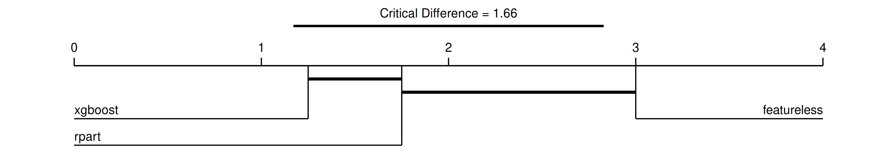
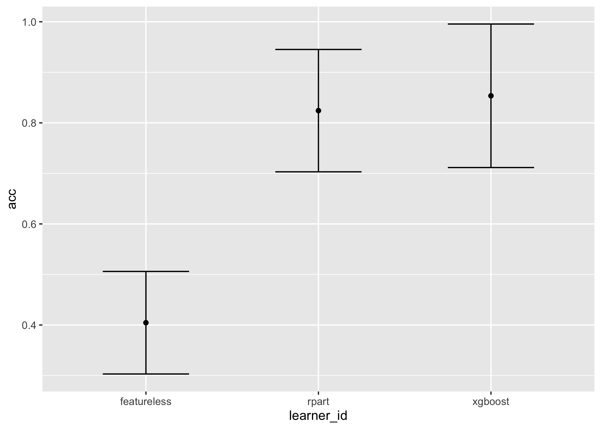
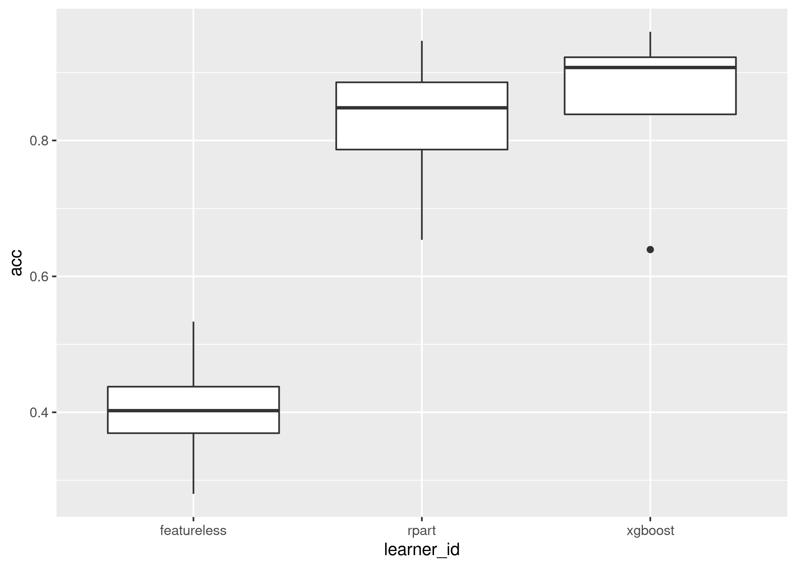

Analysis and tools for benchmarking in mlr3.


What is mlr3benchmark?
Do you have a large benchmark experiment with many tasks, learners, and measures, and don’t know where to begin with analysis? Do you want to perform a complete quantitative analysis of benchmark results to determine which learner truly is the ‘best’? Do you want to visualise complex results for benchmark experiments in one line of code?
Then mlr3benchmark is the answer, or at least will be once it’s finished maturing.
mlr3benchmark enables fast and efficient analysis of benchmark experiments in just a few lines of code. As long as you can coerce your results into a format fitting our classes (which have very few requirements), then you can perform your benchmark analysis with mlr3benchmark.
Installation
Install the last release from CRAN:
install.packages("mlr3benchmark")Install the development version from GitHub:
remotes::install_github("mlr-org/mlr3benchmark")Feature Overview
Currently mlr3benchmark only supports analysis of multiple learners over multiple tasks. The current implemented features are best demonstrated by example!
First we run a mlr3 benchmark experiment:
library(mlr3)
library(mlr3learners)
library(ggplot2)
set.seed(1)
task = tsks(c("iris", "sonar", "wine", "zoo"))
learns = lrns(c("classif.featureless", "classif.rpart", "classif.xgboost"))
bm = benchmark(benchmark_grid(task, learns, rsmp("cv", folds = 3)))Now we create a BenchmarkAggr object for our analysis, these objects store measure results after being aggregated over all resamplings:
# these measures are the same but we'll continue for the example
ba = as.BenchmarkAggr(bm, measures = msrs(c("classif.acc", "classif.ce")))
ba## <BenchmarkAggr> of 12 rows with 4 tasks, 3 learners and 2 measures
## task_id learner_id acc ce
## 1: iris featureless 0.2800000 0.72000000
## 2: iris rpart 0.9466667 0.05333333
## 3: iris xgboost 0.9600000 0.04000000
## 4: sonar featureless 0.5334023 0.46659765
## 5: sonar rpart 0.6537612 0.34623879
## 6: sonar xgboost 0.6394755 0.36052450
## 7: wine featureless 0.3990584 0.60094162
## 8: wine rpart 0.8652542 0.13474576
## 9: wine xgboost 0.9048023 0.09519774
## 10: zoo featureless 0.4058229 0.59417706
## 11: zoo rpart 0.8309566 0.16904337
## 12: zoo xgboost 0.9099822 0.09001783Now we can begin our analysis! In mlr3benchmark, analysis of multiple learners over multiple independent tasks follows the guidelines of Demsar (2006). So we begin by checking if the global Friedman test is significant: is there are a significant difference in the rankings of the learners over all the tasks?
ba$friedman_test()Both measures are significant, so now we can proceed with the post-hoc tests. Now comparing each learner to each other with post-hoc Friedman-Nemenyi tests:
ba$friedman_posthoc(meas = "acc")##
## Pairwise comparisons using Nemenyi multiple comparison test
## with q approximation for unreplicated blocked data
##
## data: acc and learner_id and task_id
##
## featureless rpart
## rpart 0.181 -
## xgboost 0.036 0.759
##
## P value adjustment method: noneThe results tell us that xgboost is significantly different from the featureless model, but all other comparisons are non-significant. This doesn’t tell us which of xgboost and featureless is better though, the most detailed information is given in a critical difference diagram, note we include minimize = FALSE as accuracy should be maximised:
autoplot(ba, type = "cd", meas = "acc", minimize = FALSE)
We read the diagram from left to right, so that learners to the left have the highest rank and are the best performing, and decrease going right. The thick horizontal lines connect learners that are not significantly difference in ranked performance, so this tells us:
- xgboost is significantly better than featureless
- xgboost is not significantly better than rpart
- rpart is not significantly better than featureless
Now we visualise two much simpler plots which display similar information, the first is the mean and standard error of the results across all tasks, the second is a boxplot across all tasks:
autoplot(ba, meas = "acc")
autoplot(ba, type = "box", meas = "acc")
We conclude that xgboost is significantly better than the baseline but not significantly better than the decision tree but the decision tree is not significantly better than the baseline, so we will recommend xgboost for now.
The analysis is complete!
Roadmap
mlr3benchmark is in its early stages and the interface is still maturing, near-future updates will include:
- Extending
BenchmarkAggrto non-independent tasks - Extending
BenchmarkAggrto single tasks - Adding
BenchmarkScorefor non-aggregated measures, e.g. observation-level scores - Bayesian methods for analysis
Bugs, Questions, Feedback
mlr3benchmark is a free and open source software project that encourages participation and feedback. If you have any issues, questions, suggestions or feedback, please do not hesitate to open an “issue” about it on the GitHub page! In case of problems / bugs, it is often helpful if you provide a “minimum working example” that showcases the behaviour (but don’t worry about this if the bug is obvious).